| #T1 城市終端機 | #T2 美感電域 | #T3 世界最美的教科書展 |
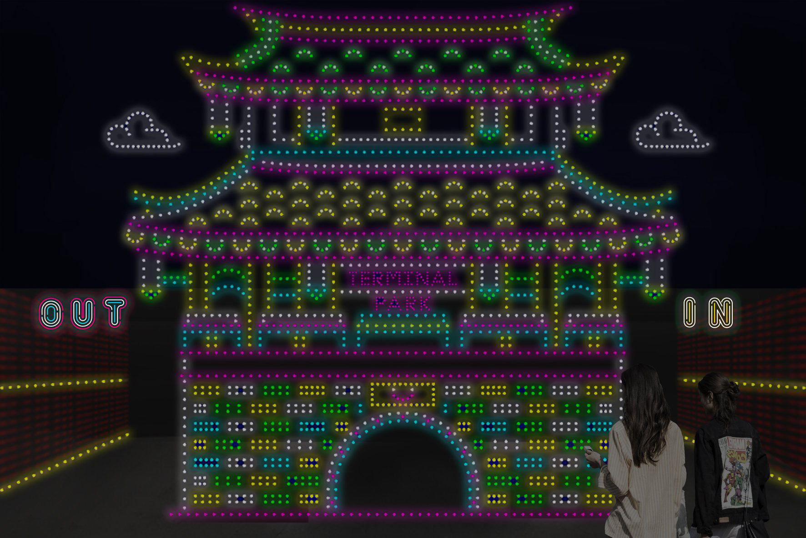 |
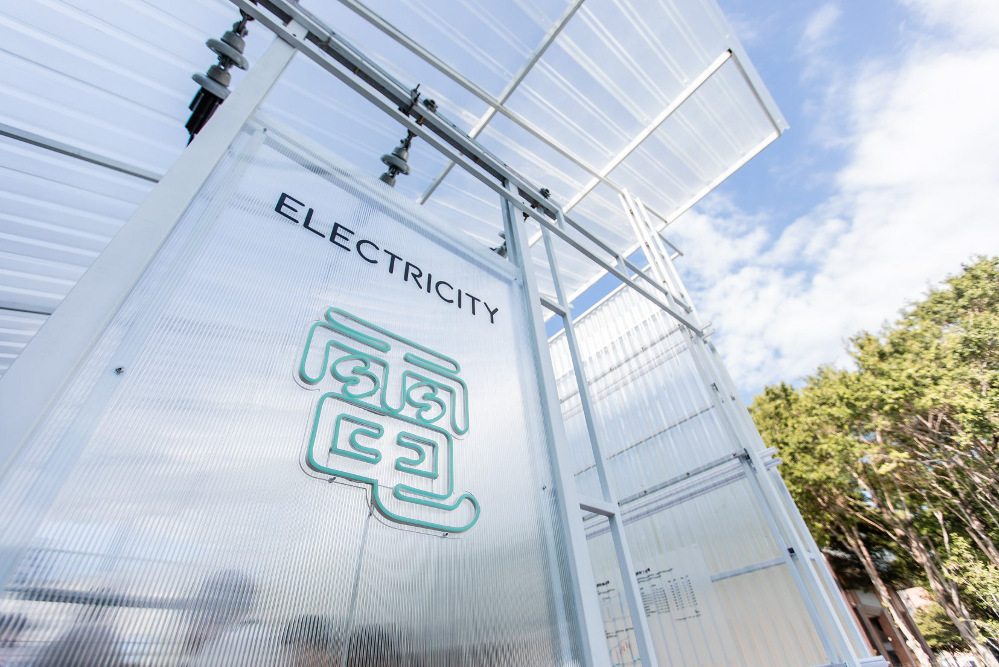 |
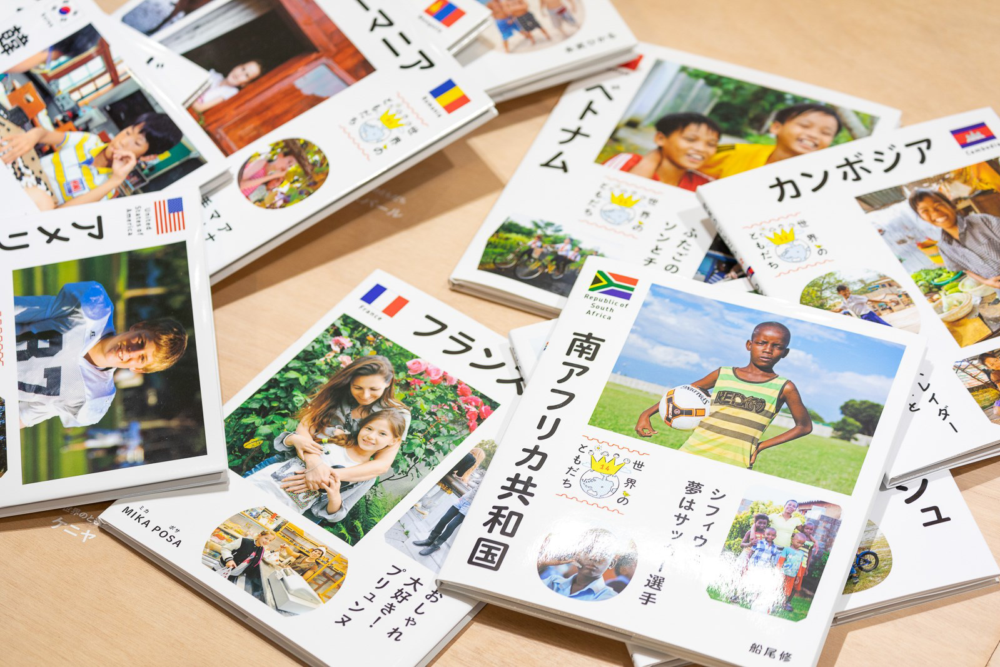 |
| 新竹市體育館 | 孔廟廣場 | 孔廟 |
來到城市終端機的中心，這裡就是一個運算處理器，負責採集、解碼、分析各式各樣的數據，資料不斷更新與傳遞，看看能夠提出什麼讓城市生活更好的應用方案！當我們跟著數據一起走進去的同時，也成為正在被記錄的數據。 |
好評如潮的『美感電域 POWER ZONE - 變電箱科普特展』新竹站就在台灣設計展！以創新文化為傲的新竹市，與台電合作推動『減法思維』的變電箱塗裝設計，打造以人為本、幸福友善的城市環境美學。今天就帶大家搶先一探究竟！ |
由都市酵母團隊策展的『世界最美的教科書展』新竹站，以台灣、日本的教科書切入觀察，呈現從古到今兩地教育策略與思考的差異 |
| #T4 超連結 Hyper_Link | #T5 Ｏ 循環設計展 | #T6 有種 新竹 |
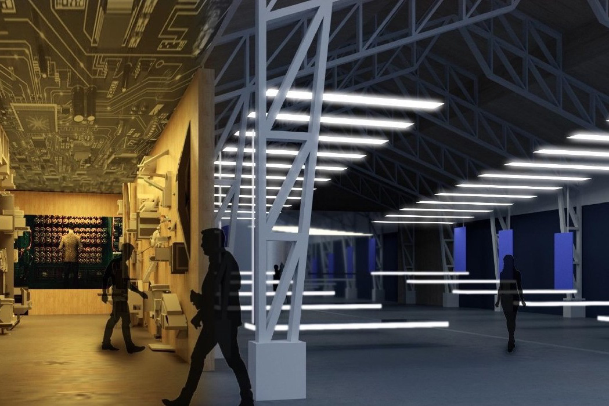 |
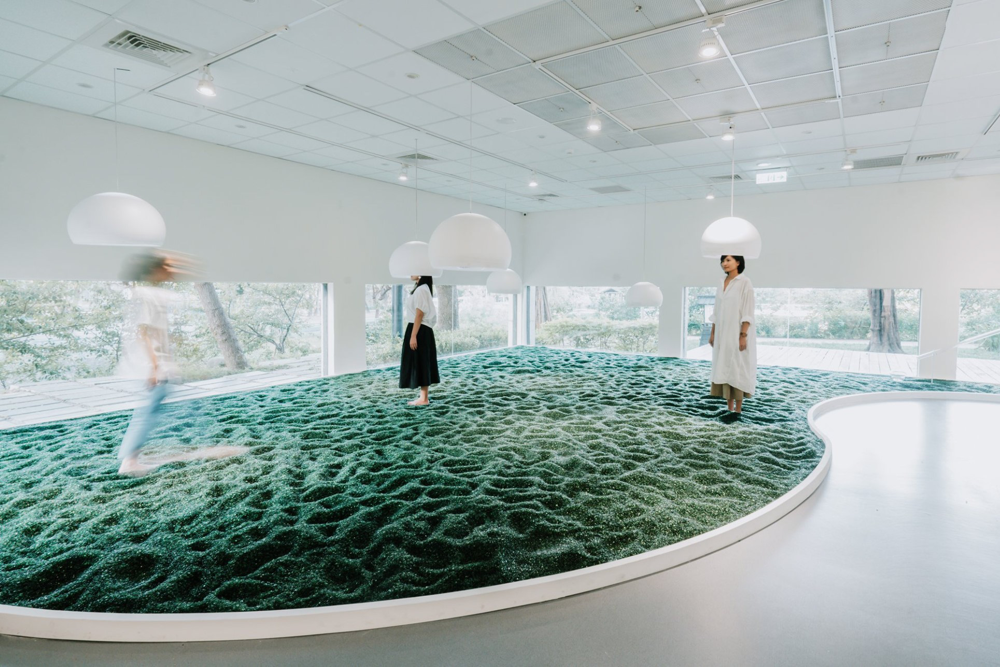 |
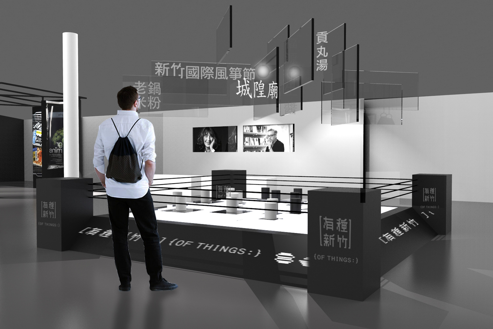 |
| 風 livehouse | 新竹玻璃工藝博物館 | 新竹市動物園 |
有形的交通工具連結了實體的社會，無形的網路平台則連結了虛擬的社群；人類不斷創造科技，科技也不斷改變人類的生活。歡迎你來到風 livehouse，感受人與人、人與科技之間產生無限可能的 #超連結！ |
團隊用 6 種在新竹實現、以循環為本的產業，告訴你循環設計如何改變一座城市的樣貌。在互動體驗中，每個人都能成為驅動的力量，展現『循環思維』下創造的無限希望！ |
『有種 新竹』以多個分區展現新竹多元的在地生活面向：『有種 吃』呈現多種#新竹在地美食；『有種 玩』以擂台形式帶出多種生活物件的新、舊型態；而『有種 買』集結各種在地特色商品，讓你將新竹的生活氣味通通打包帶走！ |
| #M1 重啟・未來閱讀 | #M2 風城轉生站 | #M3 竹塹練工房 |
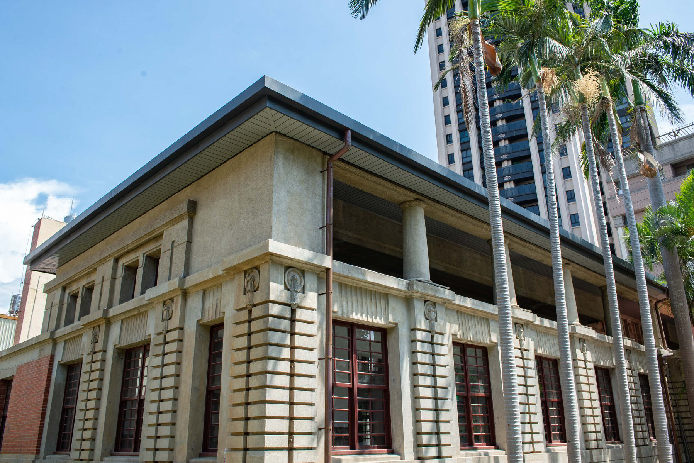 |
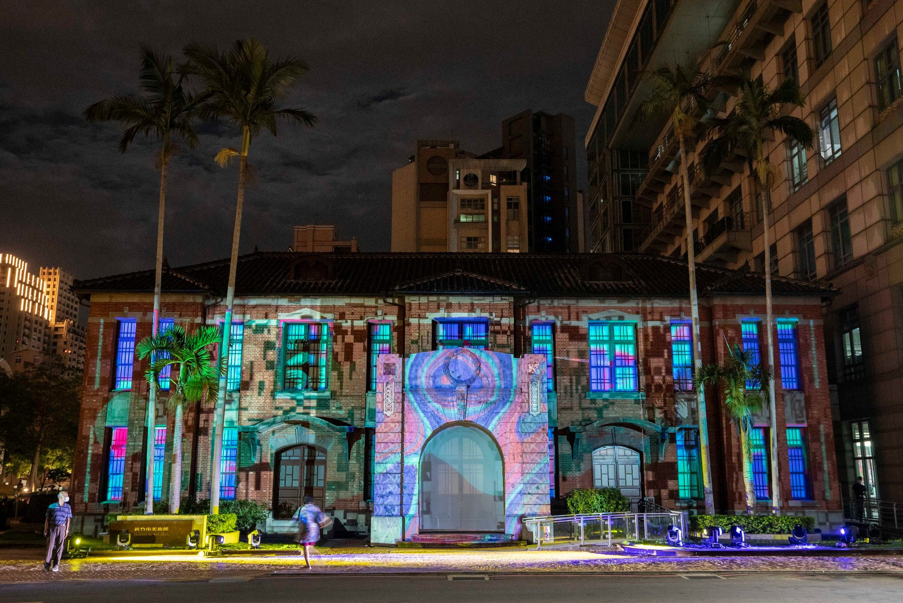 |
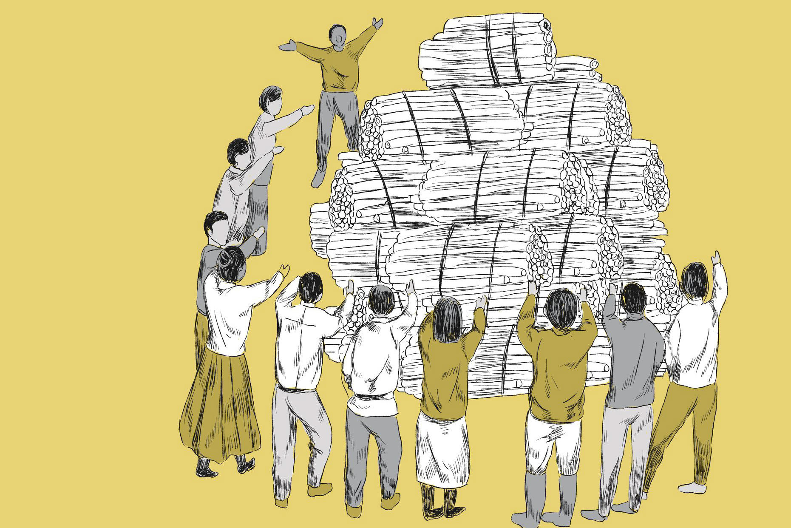 |
| 新竹州圖書館 | 新竹市美術館 | 大同108舊城再生基地 - 大同小軼 |
塵封 36 年的 #新竹州圖書館，終於要華麗重生了！2020 台灣設計展將在州圖舉辦『重啟・未來閱讀』特展，以當代藝術角度，帶你重新思考 #閱讀 的意義！ |
新竹市美術館在展覽期間變成了『舊城旅遊服務站』，帶你找到屬於自己的新竹旅行地圖！ |
你知道台灣第一種被正式定下名稱的植物是甚麼嗎？#蓪草 是新竹市 200 年前最重要的經濟作物之一，不但被用來製成台灣第一張植物紙張、更曾締造多樣的工藝作品。 |
| #M4 九降米粉道 | #M5 有樂電影院 | |
 |
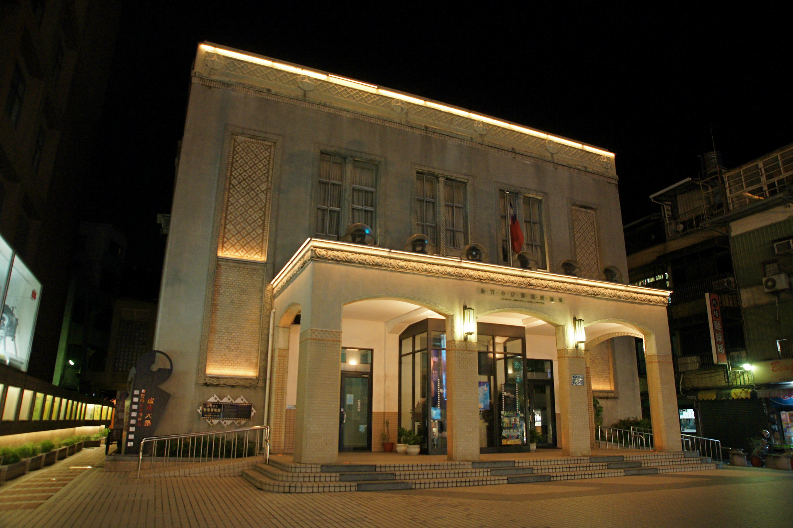 |
|
| 新州屋 | 新竹市影像博物館 | |
今天我們要帶你走進這棟建於 1934 年的新竹第一間百貨公司舊址新州屋，翻出你的味覺記憶，來一盤想像中的新竹米粉炒！以食物設計體驗的客觀手法呈現米粉的滋味。 |
於 1933 年開幕的新竹市影像博物館原名『有樂館』，是全台灣首座配有冷氣設備的歐式劇場。在 2020 台灣設計展，我們要邀請你到這座 #有樂電影院 來欣賞台灣動畫、觀賞兒童觀點的影像與人物紀實影片，品味記憶中人與家鄉的故事！ |

| #P1 大車站進行式 | #P2 大風吹泡泡 | #P3 XYZ 嬉遊中—新竹搖擺 |
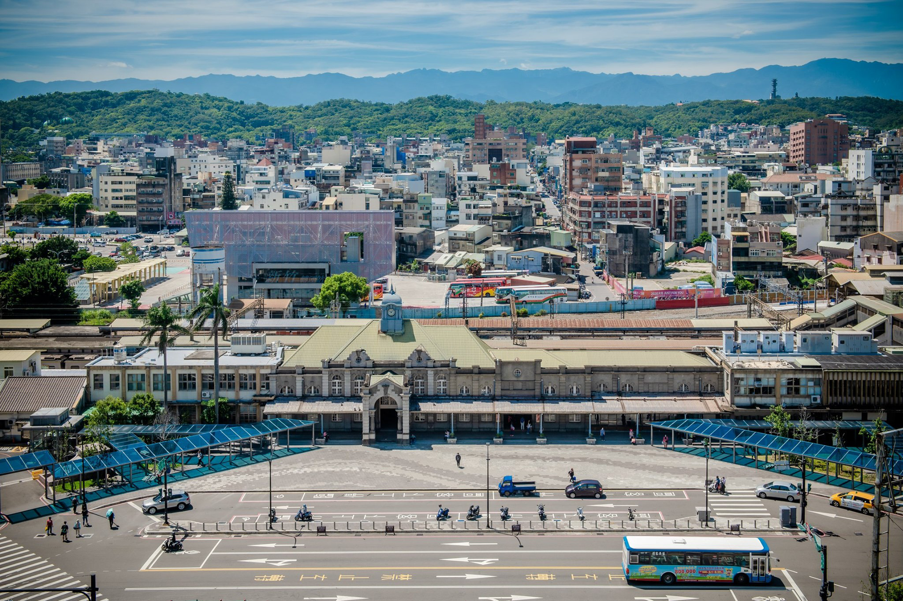 |
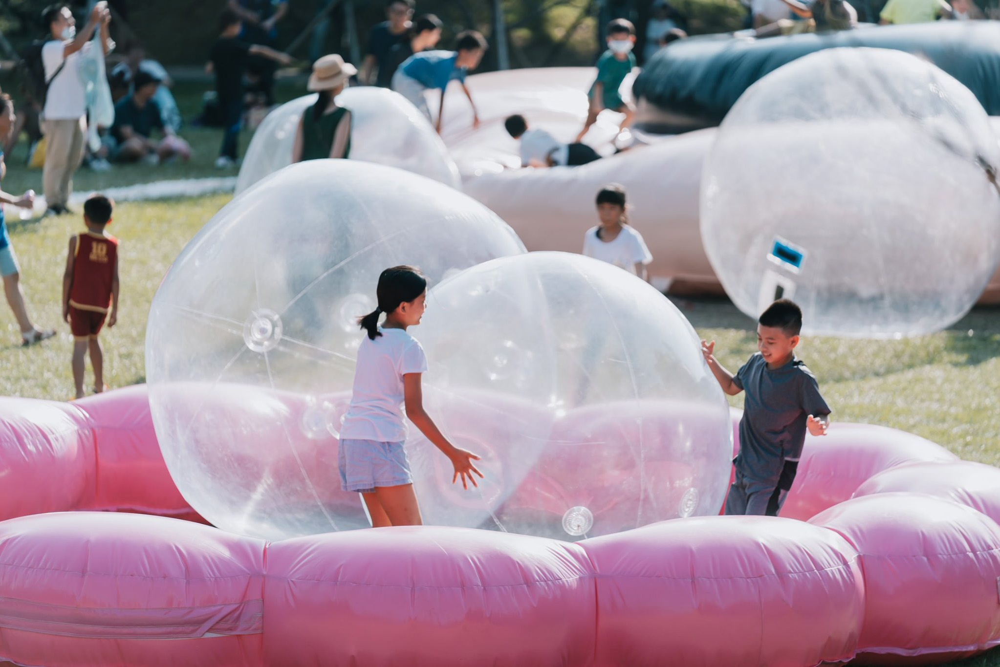 |
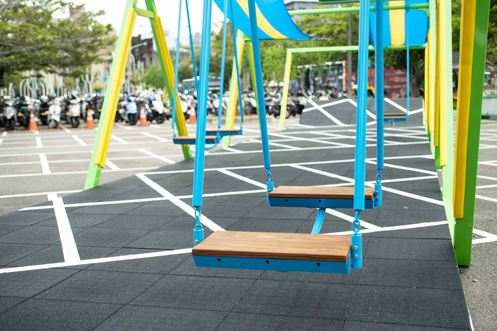 |
| 新竹轉運站 | 新竹公園 圓形廣場 | 後站機車停車場 |
新竹市政府提出以 #跨站式平台 結合前後站的『大車站計畫』，整合各類運輸節點，並以公園、行人通廊串連城區綠帶系統和商業帶，形成一個流通的生活場域。 |
內有多組圓形彈跳裝置，包含直徑 9 米的 #跳跳瘋 和直徑 3 米的 #泡泡瘋——『跳跳瘋』讓大人小孩都能在上面攀爬、玩樂，而『泡泡瘋』則用定時噴發的泡泡和燈光製造快樂氛圍。 |
這次他們以『新竹的一道風經過』為概念，為停車場的鋪面掛上隨風起舞的布幔、再用雙人鞦韆帶著大小朋友搖擺嬉遊！ |